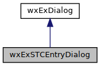

Offers an wxExSTC as a dialog (like wxTextEntryDialog). More...
#include <wx/extension/stcdlg.h>
Inheritance diagram for wxExSTCEntryDialog:

Public Member Functions | |
| wxExSTCEntryDialog (const std::string &text=std::string(), const std::string &prompt=std::string(), const wxExWindowData &data=wxExWindowData()) | |
| Default constructor. More... | |
| auto * | GetSTC () |
| Returns the STC. | |
 Public Member Functions inherited from wxExDialog Public Member Functions inherited from wxExDialog | |
| wxExDialog (const wxExWindowData &data=wxExWindowData()) | |
| Default constructor. | |
| const auto & | GetData () const |
| Returns the window data. | |
Additional Inherited Members | |
| Protected Member Functions inherited from wxExDialog | |
| wxSizerItem * | AddUserSizer (wxWindow *window, const wxSizerFlags &flags=wxSizerFlags().Expand()) |
| Adds to the user sizer using the sizer flags. | |
| wxSizerItem * | AddUserSizer (wxSizer *sizer, const wxSizerFlags &flags=wxSizerFlags().Expand()) |
| Adds to the user sizer using the sizer flags. | |
| void | LayoutSizers (bool add_separator_line=true) |
| Layouts the sizers. More... | |
Detailed Description
Offers an wxExSTC as a dialog (like wxTextEntryDialog).
The prompt (if not empty) is first added as a text sizer to the user sizer. Then the STC component is added to the user sizer.
Constructor & Destructor Documentation
◆ wxExSTCEntryDialog()
| wxExSTCEntryDialog::wxExSTCEntryDialog | ( | const std::string & | text = std::string(), |
| const std::string & | prompt = std::string(), |
||
| const wxExWindowData & | data = wxExWindowData() |
||
| ) |
Default constructor.
- Parameters
-
text initial text prompt prompt (as with wxTextEntryDialog) data data